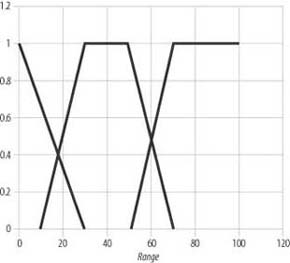
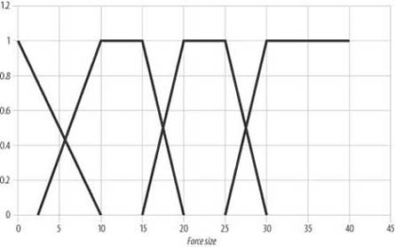

|
|
< Day Day Up > |
|
10.4 Threat Assessment ExampleIn the threat assessment example we discussed at the beginning of this chapter, we wanted to process two input variables, enemy force and the size of force, to determine the level of threat posed by this force. Ultimately, we want to determine the appropriate number for defensive units to deploy as protection against the threatening force. This example requires us to set up several fuzzy rules and defuzzify the output to obtain a crisp number for the number of defensive units to deploy. The first order of business, however, is to define fuzzy sets for the two input variables. Figures 10-14 and 10-15 show what we've put together for this example. Figure 10-14. Range fuzzy setsFigure 10-15. Force size fuzzy setsReferring to Figure 10-14 and going from the left to the right, these three membership functions represent the sets Close, Medium, and Far. The range can be specified in any units appropriate for your game. Let's assume here that the range is specified in hexes. Referring to Figure 10-15 and going from left to right, these membership functions represent the fuzzy sets Tiny, Small, Moderate, and Large. With these fuzzy sets in hand, we're ready to perform some calculations. Let's assume that during a given cycle through the game loop this fuzzy system is called upon to assess the threat posed by an enemy force eight units strong at a range of 25 hexes. So, now we need to fuzzify these crisp input values, determining the degree to which these variables fall within each predefined fuzzy set. Example 10-1 shows the code for this step. Example 10-6. Fuzzification of range and force size variablesmClose = FuzzyTriangle(25, -30, 0, 30); mMedium = FuzzyTrapezoid(25, 10, 30, 50, 70); mFar = FuzzyGrade(25, 50, 70); mTiny = FuzzyTriangle(8, -10, 0, 10); mSmall = FuzzyTrapezoid(8, 2.5, 10, 15, 20); mModerate = FuzzyTrapezoid(8, 15, 20, 25, 30); mLarge = FuzzyGrade(8, 25, 30); The results for this example are summarized in Table 10-2.
Before we consider any rules, let's address output actions. In this case, we want the fuzzy output to be an indication of the threat level posed by the approaching force. We'll use singleton output functions in this example, and the output, or action, fuzzy sets Low, Medium, and High for the threat level. Let's define the singleton output values for each set to be 10 units, 30 units, and 50 units to deploy for Low, Medium, and High, respectively. Now we can address the rules. The easiest way to visualize the rules in this case is through the use of a table, such as Table 10-3.
The top row represents the range fuzzy sets, while the first column represents the force size fuzzy sets. The remaining cells in the table represent the threat level given the conjunction of any combination of range and force size. For example, if the force size is Tiny and the range is Close, the threat level is Medium. We can set up and process the rules in this case in a number of ways. By inspecting Table 10-3, it's clear that we can combine the input variables using various combinations of the AND and OR operators to yield one rule for each output set. However, this will result in rather unwieldy code with many nested logical operations. At the other extreme we can process one rule for each combination of input variables and pick the highest degree for each output set; however, this results in a bunch of rules. Nonetheless, it's the simplest, most readable way to proceed, so we'll sort of take that approach here. To simplify things further, we'll show only combinations of input sets with nonzero degrees of membership, and we'll make at least one nested operation. These are illustrated in Example 10-1. Example 10-7. Nested and non-nested fuzzy rules. . . mLow = FuzzyOr(FuzzyAND(mMedium, mTiny), FuzzyAND(mMedium, mSmall)); mMedium = FuzzyAND(mClose, mTiny); mHigh = FuzzyAND(mClose, mSmall); . . . For our example, the results of these rule evaluations are mLow = 0.73, mMedium = 0.17, and mHigh = 0.17. These are the degrees of membership in the respective output fuzzy sets. Now we can defuzzify the results using the singleton output membership functions we defined earlier to get a single number representing the number of defensive forces to deploy. This calculation is simply a weighted average, as discussed earlier. Example 10-1 shows the code for this example. Example 10-8. Defuzzification
nDeploy = ( mLow * 10 + mMedium * 30 + mHigh * 50) /
(mLow + mMedium + mHigh);
The resulting number of units to deploy, nDeploy, comes to 19.5 units, or 20 if you round up. This seems fairly reasonable given the small size of the force and their proximity. Of course, all of this is subject to tuning. For example, you easily can adjust the results by changing the singleton values we used in this example. Also, the shapes of the various input membership functions are good candidates for tuning—you can try different shapes for each fuzzy set or use more or fewer fuzzy sets. Once everything is tuned, you'll find that no matter what input values go in, the response always will vary smoothly from one set of input variables to another. Further, the results will be much harder for the player to predict because there are no clearly defined cutoffs, or breakpoints, at which the number of units to deploy would change sharply. This makes for much more interesting gameplay. |
|
|
< Day Day Up > |
|